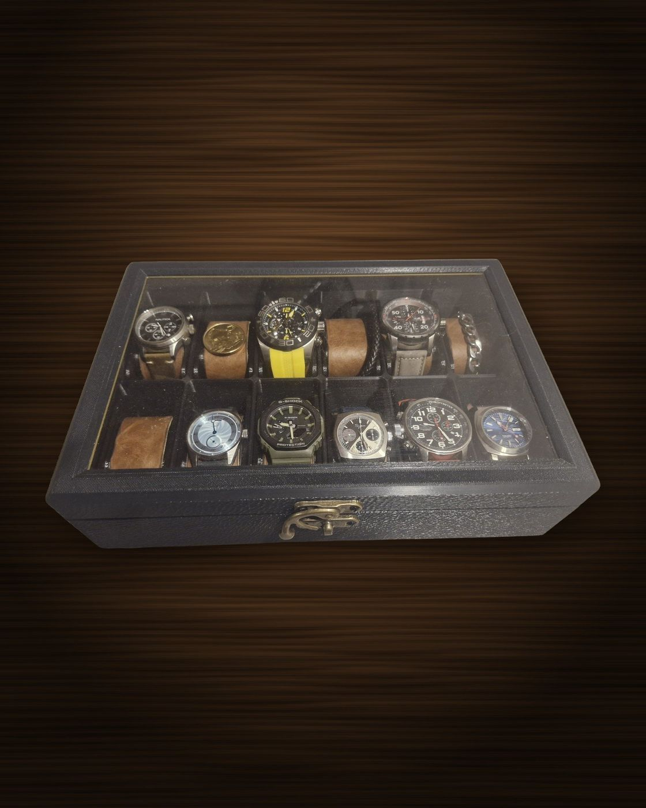
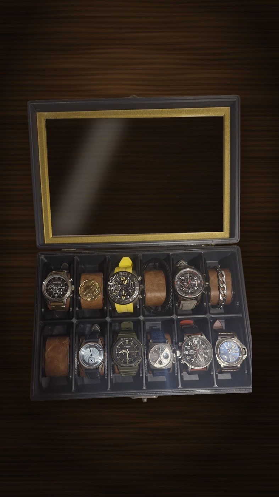

Caja para 12 relojes
Doce lugares con almohadilla, tapa de vidrio para verlos sin abrir y marco dorado. Para coleccionistas o para quien quiere ordenar los relojes de todos los días.
- Capacidad12 relojes
- ColorNegro con detalles dorados
- TapaVidrio
- PrecioConsultar
Los relojes de las fotos no se venden: son para mostrar cómo se usa.